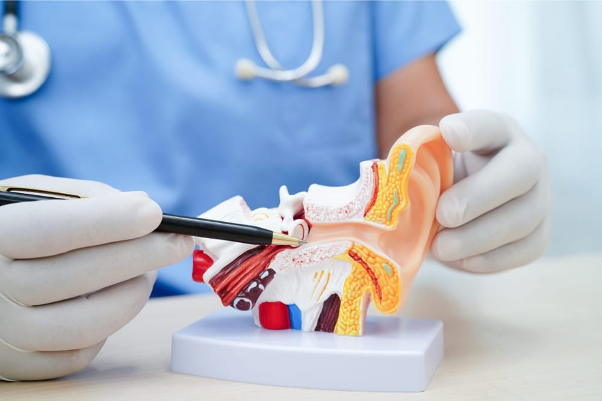

Notre philosophie
Retrouvez le confort d'entendre, au quotidien.
Chez AUDIOBEL, nous accompagnons les personnes malentendantes à Liège avec une approche claire : bilan précis, conseils compréhensibles et suivi dans la durée.
Notre priorité est de vous proposer une solution adaptée à votre audition, votre mode de vie et votre budget, avec un accompagnement humain à chaque étape.
Réponse personnalisée selon votre situation auditive et administrative (INAMI / mutuelle).

Parcours AUDIOBEL
Chaque sujet sur sa page dédiée
Naviguez par thème pour lire le contenu complet.
L'audition
Symptômes, degrés de perte et étapes à suivre.
Solutions auditives
Marques, connectivité Bluetooth et solutions rechargeables.
Service
Bilan auditif complet en centre, réglages et suivi personnalisé.
Prix & remboursement
Tarifs, intervention INAMI, mutuelles et reste à charge.
À propos
Notre approche, notre ancrage local et notre accompagnement.
Catalogue des appareils
Découvrez les modèles et leurs indications principales.
5 étapes clés pour retrouver le plaisir d'entendre
- Prendre rendez-vous au 0470 20 62 26.
- Réaliser un bilan ORL/auditif clinique complet.
- Comprendre votre perte auditive et les solutions possibles.
- Tester une solution pendant 30 jours, sans engagement.
- Valider les réglages et démarrer votre suivi personnalisé.
| Étape | Détail de la procédure | Durée moyenne |
|---|---|---|
| 1. Entretien initial | Nous analysons vos antécédents et votre mode de vie, car chaque audition est unique. | 10 min |
| 2. Examen des oreilles | Vérification minutieuse du conduit auditif et du tympan avec un matériel médical. | 5 min |
| 3. Mesure de votre audition | Pour identifier précisément là où vous entendez moins bien. | 10 min |
| 4. Test de compréhension de la parole | En silence et en bruit, pour refléter vos situations réelles du quotidien. | 10 min |
| 5. Test de tolérance au bruit | Pour détecter une éventuelle hyperacousie. | 5 min |
| 6. Analyse des acouphènes | Si nécessaire, nous mesurons leur fréquence et leur intensité. | 5 min |
Prendre contact
Parlons de votre audition à Liège
Un premier échange vous permet de savoir rapidement quelle démarche est la plus adaptée à votre situation.